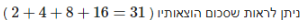

לגבי סעיף 3 מציע על חשיבה שונה, למה לחזור להמר על דולר אחד?
ולגבי סעיף 4 ו- 5 חשוב שתסתכל שוב על דרישות התרגיל:
“השתמשו בספרייה החיצונית matplotlib כדי להציג למשתמש גרף של זכיותיו כפונקציה של זמן לפי שיטת מרטינגל.
ציר ה־x של הגרף ייצג את כמות הסיבובים שעברו מאז כניסתו של המהמר לקזינו.
ציר ה־y של הגרף ייצג את כמות הכסף שנשאר למהמר המרטינגל.”
רק כדי להבהיר: בשיטת מרטינגל בוחרים רק צבע. ללא בחירת מספר?
לייק 1
זה נכון. השיטה ״עובדת״/מבוססת על הימורים מאוזנים.
אז מה לעשות במצב כזה? להחזיר את ההימור ל-1 או להמר על כל מה שנשאר?
באיזה מצב?
אם התכוונת למצב שבו ההימור גבוה מהכסף שנשאר - תהמר על מה שנשאר (אני חושב, זה מה שאני עשיתי).
לייק 1
כן כן, לזה התכוונתי.
האמת שאני החזרתי את ערך ההימור ל-1, אבל אשמח לתשובה רשמית מהסגל חח
גם אני עשיתי שהוא מהמר על מה שנשאר כי בעצם זה הכי הגיוני כי בוא נגיד שאם היה נשאר לו בדיוק את אותו הסכום הוא הרי היה מהמר על כל הסכום ולכן אין הגיון שאם היה לו את כל הסכום פחות 1 הוא יתחיל מ0.
2 לייקים
שאלה נוספת (ובתקווה אחרונה…)- האם חוץ מהגרף יש צורך להציג משהו נוסף?
לא. כל השאר זה בחירה שלך (:
בגדול הגרף משקף דיי יפה את המ שקרה
לייק 1
לגבי מקרה הקצה שנותר בידי המהמר סכום הנמוך מהכפלת ההימור במצב של הפסד - לדעתי שני הפתרונות מתקבלים על הדעת - להמר על הכל או להתחיל מ-1. במיוחד שההנחיה היא לא לשנות צבע (פסיכולוגית, כי מדובר בהסתברות בלתי תלויה). זה קצת מזכיר לי את פרדוקס שעשועון 3 הדלתות. מכירים? יכול גם להוות בסיס לתרגיל בפייתון.
היה משהו כזה בארץ אם אני לא טועה לפני המון שנים. היה שעשועון כזה
לייק 1
למעשה יש לי גם תרגיל כזה מוכן 
2 לייקים
יש אצלי כנראה קונפליקט בין גירסת הפייתון של הג’ופיטר לבין זו של האנקונדה, ולמרות שבאנקונדה יש לי את ספריית matplotlib, הג’ופיטר טוען שאינה קיימת. הסרתי את האנקונדה והתקנתי מחדש, אבל זה לא פתר את זה. איפה אני אומר לג’ופיטר איזה interpreter להשתמש? בדקתי ב-path אבל שם בכלל יש לי רק pycharm. מישהו אולי יודע? בגוגל יש מידע מאוד חלקי על הבעיה הזו.
H-E-L-P
אם התקנת בצורה שהוסברה בקורס לא אמור להיות כזה. ודא שאתה מוסיף %matplotlib inline אחרי יבוא הספריות בתא.
לייק 1
השורה שמפנה לפייתון בתוך קובץ ה-kernel.json היתה שגויה. עכשיו זה עובד. תודה
{kind=link}
ההפרדה הראשונית צריכה להיות בין מודולים חיצוניים למודולים שבאים עם פייתון.
אז random אמורה להופיע בפסקה הראשונה, numpy ו־matplotlib בפסקה השנייה.
אחרי זה לסדר בכל פסקה את הספריות לפי סדר אלפבתי.
לייק 1
רק רוצה להפנות את תשומת הלב שיש טעות קטנה בדוגמא של השיטה וחסר במשוואה “1+” 

תודה! אתקן עכשיו
דבר אחד לא ברור לי, שאני מקבלת ‘אדום’ בסיבוב:
סכום הזכייה הוא -
(סכום ההימור * 2) פחות סך ההוצאות?
או
(סכום ההימור * 2) פחות סך ההוצאות * 36?